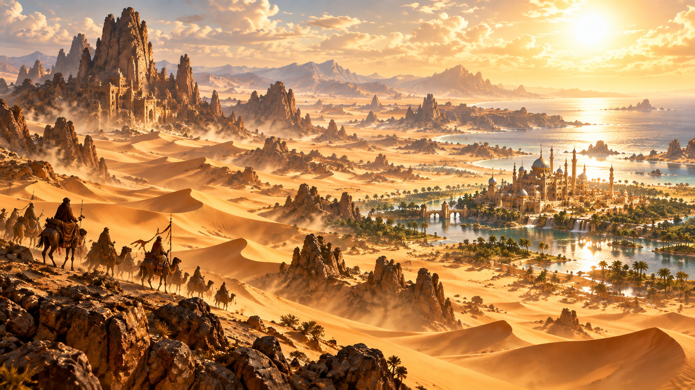

THE LUSHAYR
Lushâra Desert
A vast and unforgiving expanse of golden dunes and sun-baked plains, fierce by day and cold beneath an immense canopy of stars at night.
The Grand Sultanate of Lakari controls lush eastern cities and coastal oases, while the Dolqadír slavers prey upon caravans crossing the deep western desert near the Fulmannon Mountains.
LAKARI · DOLQADÍR · OASES & CARAVANS